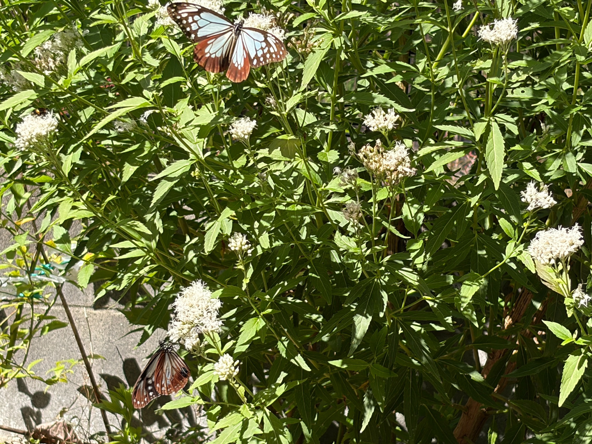
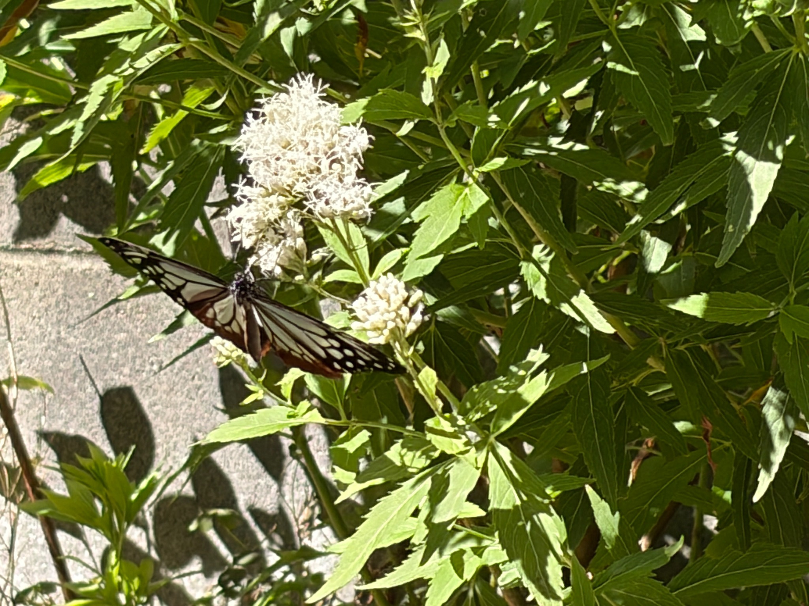
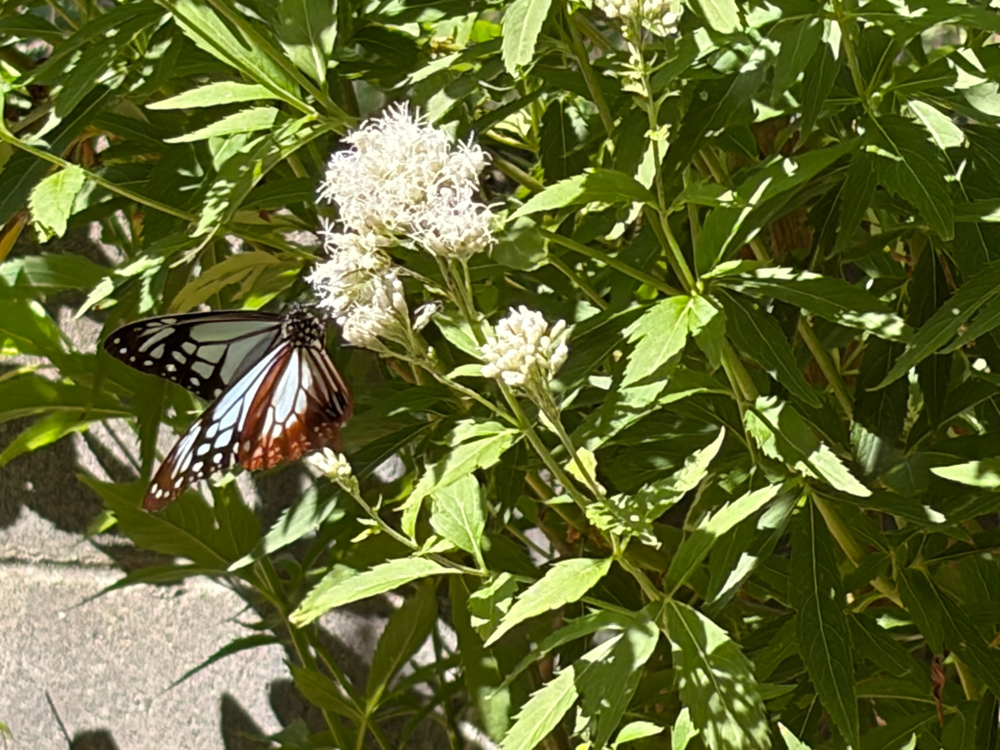

白い花が咲きそろい、満開を迎えました
10月17日、白フジバカマ（原種系）は、私が株全体を見た印象では満開になりました。
枝先のあちこちに白い花房が広がり、緑の葉の間で、白い糸状の部分がふんわりと目立っています。高い位置だけでなく、手前や低い位置にも花房があり、花の重なりを楽しめる姿になりました。
5日前の10月12日は、白い花が広がる一方で、細長い蕾を多く残した花房もありました。先に開いた部分には薄茶色や褐色の変化も見られ、これから咲く花、今咲いている花、咲き進んだ花が、ひとつの株の中に混在していました。
17日は、よく開いた白い花房が株のあちこちで目に入り、全体として花が咲きそろったと感じます。9月から少しずつ白い花が増えていく様子を見てきたので、こうして満開を迎えた姿を見るとうれしくなります。
ただ、満開といっても、すべての小さな花が同じ瞬間に開いているわけではありません。近くで見ると、まだ開いていない白い蕾も残っています。ここでいう満開は、花を一つずつ数えた割合ではなく、株全体を眺めた私の目安です。
白い花房に、2匹のアサギマダラがとまりました
この日は、庭で2匹のアサギマダラを確認しました。9時30分から14時30分にかけて庭の様子を見ている中で、白フジバカマにもとまる姿がありました。
白い花房の上で翅を大きく広げる姿と、少し低い位置の花房につかまる姿。別々の花房にとまった2匹を、一緒に写真に残すことができました。
淡い浅葱色と茶色の翅が、白い花と緑の葉の間でよく目立ちます。花壇を少し離れて見ても、翅を広げた姿には自然と目が向きます。
アサギマダラに来てほしいと思いながら育ててきた花に、こうして2匹がとまっている。開花を待つ楽しみが、蝶を迎える楽しみにつながったと感じる場面でした。

写真には、上側で翅を広げる1匹と、左下の花房にとまるもう1匹が写っています。同じ株の中でも高さの違う花房を利用しており、白い花の広がりと蝶の姿を一緒に残せました。
花房の位置がいくつもあると、蝶がどこにとまっているのかを探す楽しみもあります。目立つ上の花だけでなく、葉の間や手前の低い花にも目を向けながら、庭の様子を眺めました。
満開の中にも、これから開く蕾が残っています
近くから見ると、白い糸状の部分が密に広がり、ふんわりと丸みを帯びた花房があります。そのすぐ隣には、白い蕾がまとまって残る小さな花房も見られます。
遠くからは、どちらも白い花のまとまりに見えます。ただ、近づいてみると、開いた花は糸状の部分が外へ広がり、柔らかな輪郭になっています。一方、蕾の多い花房は一本一本の形が分かりやすく、引き締まったまとまりに見えます。
白フジバカマは、蕾の段階から白さが目立ちます。そのため、花房が白く見えることと、小さな花が十分に開いていることは、同じではないのだと感じます。
株全体では満開と感じる姿でも、花房ごとには違いが残っています。大きく開いた花のすぐ近くで、次に咲く蕾が控えている。その重なりが、今の白フジバカマの姿です。

アサギマダラのそばには、糸状の白い部分がよく広がった花房があります。その右側には、まだ開いていない白い蕾のまとまりが見えます。
こうして近くから見ると、「満開になった」というひと言だけでは表しきれない、花房ごとの咲き具合が分かります。一斉に咲いて一斉に終わるのではなく、それぞれの小さな花が少しずつ時期をずらしながら開いているように見えます。
白い花の中には、咲き進んだ部分も見られます
よく開いた花房を見ていくと、真っ白な糸状の部分に交じって、薄茶色や褐色に見える部分もあります。
10月12日にも、先に咲いた花の一部で色の変化が見られました。17日も、白い花が広がる中に、咲き進んだように見える部分が残っています。
ただ、花房全体が褐色になっているわけではありません。白く開いた部分と、色の変わった部分が隣り合い、その近くにはまだ蕾もあります。同じ花房や、その周囲の小さな花房の間でも、開花の段階に違いがあります。
満開は、すべての花が新しく開いた瞬間だけを指すものではないのだと、株を見ながら感じます。先に咲いた花が変化し、その間にも別の蕾が開く。その重なりの中で、株全体として花が最も充実して見える時期を迎えているのかもしれません。

白い糸状の部分が広がる花房に、アサギマダラがとまっています。花房の下側には少し色の変わった部分があり、隣には白い蕾がまとまっています。
葉は緑色を保ち、花房の下にも重なっています。今回写した範囲では、株全体の葉が一斉に黄ばんだり、枯れ込んだりしている様子は見られません。緑の茎葉を残しながら、花のほうでは開花と、その後の変化が同時に進んでいます。
10月12日とは、よく吸蜜する花が変わりました
この日、特に気になったのは、アサギマダラがよく利用する花の変化です。
10月12日は、私が見ていた範囲では、吸蜜の9割以上が白フジバカマ（原種系）でした。白い花房で蜜を吸っている姿が多く、庭の中でも、こちらをよく利用しているという印象でした。
ところが17日は、吸蜜の約9割が、もう一方のフジバカマ（原種系）に集中していました。
白フジバカマが満開になったから、こちらで吸蜜する姿がさらに増えるのかと思えば、そう単純ではありませんでした。白い花は十分に咲いているのに、この日は、約8割まで開花したフジバカマ（原種系）をよく利用していました。
もちろん、白フジバカマに来なくなったわけではありません。今回も2匹が同時にとまる場面がありました。ただ、観察していた間の吸蜜の中心は、5日前とは変わっていました。
この割合は、吸蜜時間を計測して出した数値ではありません。庭で見ていた間の印象による目安ですが、12日と17日で、よくとまる花が違っていたことは心に残りました。
満開の花と、満開手前の花。その違いが気になります
17日の庭では、白フジバカマ（原種系）が満開、フジバカマ（原種系）が約80％、羽衣が約50％という咲き具合でした。
同じ庭で育てていても、花が進む速さには違いがあります。その違いがあることで、アサギマダラがどの花を利用しているのかを、比べながら見ることができました。
今回の様子を見ていると、満開になる少し前の、花が次々と開いている時期が、吸蜜によいタイミングなのではないかと感じます。
白フジバカマも、まだ蕾を多く残していた12日には、よく利用されていました。そして17日は、満開になった白フジバカマよりも、蕾を残しながら約8割まで開いたフジバカマ（原種系）で吸蜜する姿が多く見られました。
この変化を見ると、見た目に花が最も多いときと、アサギマダラがよく吸蜜するときは、必ずしも重ならないのかもしれません。
ただ、満開になったから蜜が減ったとまでは、今の観察では分かりません。蜜の量を調べたわけではなく、花の種類と開花段階の両方が違っています。日当たりや天候、訪れた個体の違いなども関係しているのかもしれません。
今は、12日と17日で吸蜜する花の偏りが変わったことを、花の咲き具合と一緒に残しておきたいと思います。これから同じような場面を重ねて見ていく中で、わが家の庭での傾向が少しずつ分かってくれば楽しみです。
10月12日から17日まで、目で確認できただけで延べ10匹に
10月12日から17日までに庭を訪れたアサギマダラは、私が目で確認できただけで延べ10匹になりました。
これは、違う個体が10匹来たと分かったわけではありません。同じ個体が再び訪れている可能性もあり、一日中見続けているわけでもありません。庭で姿を確認できた分を積み重ねた数です。
それでも、育ててきた花が、繰り返しアサギマダラの訪れる場所になっていることをうれしく感じます。
17日は、ミドリヒョウモンも4匹ほど見られ、ミツバチやアブ、小さなハナムグリなども合わせて50匹くらいが、花で蜜を吸ったり、周りを飛び回ったりしていました。
白フジバカマだけに集まった数ではなく、この日の庭全体で見られたにぎわいです。アサギマダラのために育てている花を、ほかのさまざまな昆虫も利用していました。
満開を迎えた後の変化も、続けて見ていきたいです
白フジバカマは満開を迎えましたが、花房を近くから見ると、まだ開いていない蕾もあれば、先に咲いて色の変わった部分もあります。
これから、白く開いた花と褐色の部分の割合がどう変わっていくのか。残っている蕾が開いたとき、株全体の白さがどのくらい続くのか。満開になった今だからこそ、その先の変化も気になります。
アサギマダラがよく利用する花も、12日と17日では変わりました。これからフジバカマ（原種系）がさらに咲き進み、羽衣の花が増えてきたとき、また吸蜜する場所が変わるのでしょうか。白フジバカマをよく利用する日が再びあるのかも、見ていきたいところです。
白い花房に2匹のアサギマダラがとまった姿と、満開を迎えた株の様子。そして、ほかのフジバカマへ吸蜜の中心が移ったこと。10月17日は、花の見ごろだけでなく、花と蝶の関わりにも目を向ける一日になりました。
これからも、白フジバカマの咲き具合と、庭を訪れるアサギマダラの姿を、一緒に記録していこうと思います。